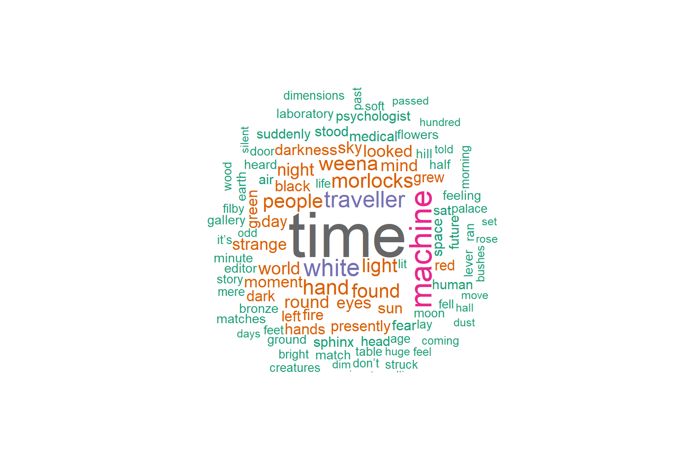

Content from Introduction to Text Mining
Last updated on 2023-07-11 | Edit this page
Overview
Questions
- What is text mining?
- What is the process of a typical text mining study?
- What are the common techniques of text preprocessing?
Objectives
- Tokenize the textual data
- Remove stop words
- Calculate the word frequencies
Text Mining and Text Analysis
Depending on how it is organized, data can be grouped into two categories: structured data and unstructured data. Structured data is data that has been predefined and formatted to a tabular format with rows and columns, such as data stored in a relational database, or membership information housed in an Excel spreadsheet. While unstructured data does not have a predefined data format. It comes in various formats, for example, email, presentation, images, etc. Another category is a blend between structured and unstructured data formats, which is called semi-structured data. It refers to what would normally be considered unstructured data, but that also has metadata that identifies certain characteristics. Some common examples of semi-structured data are XML, JSON, and HTML files.
Text mining, or text analysis, is the process of exploring and analyzing unstructured or semi-structured text data to identify key concepts, pattens, relationships, or other attributions of the data. Text mining began with the computational and information management areas, whereas text analysis originated in the humanities with the manual analysis of text such as newspaper indexes and Bible concordances. Now these two terms are exchangeable, and generally refer to the use of computational methods to explore and analyze unstructured text data.
Simplified Process of Text Mining Projects
A simplified process of a typical text mining study can include four steps: data gather, text preprocessing or cleaning, text analysis, and communication.
In terms of data gathering, we may create a dataset or select existing datasets.
After a dataset is generated, usually, we need to preprocess or clean the text to get it ready for analysis. Common techniques used for preparing a dataset include converting text to lower case, removing punctuations and non-alphanumeric characters, remove stopwords, tokenization, tagging parts of speech, word replacement, stemming and lemmatization, etc.
Next step will be text mining or analysis. Some common text mining methods are topic modelling, sentiment analysis, term frequency and TF-IDF, and collocation analysis.
We will then communicate the findings from text mining through publications, conferences, or other channels.
Various text preprocessing techniques and text mining methods serve different research purposes. This lesson is to demo how to use the R package tidytext to preprocess text data from an existing dataset to perform a sentiment analysis.
Preprocess and Clean Text
Tidy Data and Tidy Text
R is powerful processing structured data, or tabular data, where data display in columns or tables. R can also handle unstructured and semi-structured data such as text. Julia Silge and David Robinson followed the tidy data principles branded by Hadley Wickham and developed the package tidytext to preprocess and analyze textual data.
Tidy data sets allow manipulation with a standard set of “tidy” tools, including popular packages such as dplyr (Wickham and Francois 2016), tidyr (Wickham 2016), ggplot2 (Wickham 2009), and broom (Robinson 2017). These packages extend the capacities of tidytext of exploring and visualizing textual data. Users can transit fluidly between these packages by keeping the input and output in tidy formats.
Token and Tokenization
Many text mining or analysis methods are based on counting words, phrases, sentences, or other meanful segments. Spliting textual data into segments enables the computer to count and perform other calculations. These segments are called tokens and the process of splitting textual data is called tokenization.
In the package tidytext, tidy text is defined as a one-token-per-row data frame, where a token can be a character, a word, a n-gram, a sentence, a paragraph, a tweet, etc.
Here is a simple example to explain how to use tidytext to tokenize textual data. In R, textual data can be stored as character vectors. For example:
R
lyrics <- c("How many roads must a man walk down",
"Before you call him a man?",
"How many seas must a white dove sail",
"Before she sleeps in the sand?",
"Yes, and how many times must the cannonballs fly",
"Before they're forever banned?")
lyrics
OUTPUT
[1] "How many roads must a man walk down"
[2] "Before you call him a man?"
[3] "How many seas must a white dove sail"
[4] "Before she sleeps in the sand?"
[5] "Yes, and how many times must the cannonballs fly"
[6] "Before they're forever banned?"To tokenize this character vector, we first need to put it into a data frame. We use the function tibble from the package tidyverse to convert a character vector into a tibble.
R
install.package("tidyverse")
library(tidyverse)
lyrics_df <- tibble(line = 1:6, lyrics)
lyrics_df
OUTPUT
# A tibble: 6 × 2
line lyrics
<int> <chr>
1 1 How many roads must a man walk down
2 2 Before you call him a man?
3 3 How many seas must a white dove sail
4 4 Before she sleeps in the sand?
5 5 Yes, and how many times must the cannonballs fly
6 6 Before they're forever banned? Next, we will use the function unnest_tokens to break the lyrics into words. In the meanwhile, punctuations are stripped.
The function unnest_tokens has three primary arguments:
- tbl: the data frame to be tokenized.
- output: the column to be created as string or symbol.
- input: the column that gets split as string or symbol.
R
install.package("tidytext")
library(tidytext)
unnest_tokens(tbl = lyrics_df,
output = word,
input = lyrics)
OUTPUT
# A tibble: 41 × 2
line word
<int> <chr>
1 1 how
2 1 many
3 1 roads
4 1 must
5 1 a
6 1 man
7 1 walk
8 1 down
9 2 before
10 2 you
# … with 31 more rowsThe result of unnest_tokens is a tibble. In our case, the lyrics is split into 41 words with each word takes a row. The input column lyrics is removed; the new column, or the output column word, is added; and the column line is kept unchanged.
Beyond these three primary arguments, the function unnest_tokens also has several optional arguments. The default token is “words”. It can be set as “characters”, “sentences”, “n-grams”, “lines”, “paragraphs”, etc. unnest_tokens automatically converts tokens to lowercase and drops the input column if not specified. Punctuations are stripped during the tokenization. Converting text to lower case and removing punctuations are also common text preprocess or cleaning techniques. Since the function unnest_tokens can fulfill these tasks, we do not need to perform them separately.
Since the first argument of unnest_tokens is a data frame, we can also use pipes to send a data frame to it and obtain the same results:
R
lyrics_df %>%
unnest_tokens(word, lyrics)
Stop Words
When analyzing text, usually, some extremely common words such as “the”, “have”, “is”, “are” are of little value in serving the research purposes. We want to exclude them from the textual data entirely. These words are called stop words. Removing stop word is one of the common text preprocessing techniques, which allows researchers to focus on the important words in the textual data instead. There is no single universal list of stop words used by all text analysis tools, nor any agreed upon rules for identifying stop words, and indeed not all tools even use such a list. Therefore, any group of words can be chosen as the stop words for a given purpose.
R package stopwords provides stop word lists for multiple languages and sources. It is easily extended. The package tidytext also offers a data frame, stop_words, to host English stop words from three lexicons - onix, SMART, and snowball, with non-ASCII characters removed. The data frame stop_words includes 1,149 stop words. We use it in this lesson when excluding stop words from our data sets.
We can use the function anti_join to exclude stop words from the textural data set. For example:
R
lyrics_df %>%
unnest_tokens(word, lyrics) %>%
anti_join(stop_words)
OUTPUT
# A tibble: 14 × 2
line word
<int> <chr>
1 1 roads
2 1 walk
3 2 call
4 3 seas
5 3 white
6 3 dove
7 3 sail
8 4 sleeps
9 4 sand
10 5 times
11 5 cannonballs
12 5 fly
13 6 forever
14 6 bannedAfter removing the stop words, only 14 words left in the lyrics.
Apply Data Preprocessing to a Text Mining Project
Project Gutenberg Collection
In terms of data gathering, we can create our own data sets or use existing textual datasets. In this lesson, we will use the Project Gutenberg as the source of our data sets. The Project Gutenberg is a collection of free electronic books, or eBooks, available online. The R package gutenbergr, developed by David Robinson, allows users to download public domain works from the Project Gutenberg collection as well as search and filter works by author, title, language, subjects, and other metadata. Project Gutenberg ID is one of the most important metadata, which we can use to download the text for each novel.
Let’s use The Time Machine as an example to see how to find the Gutenberg ID and download the text.
R
install.packages("gutenbergr")
library(gutenbergr)
gutenberg_metadata %>%
filter(title == "The Time Machine")
OUTPUT
# A tibble: 3 × 8
gutenberg_id title author gutenberg_author_id language gutenberg_bookshelf rights has_t…¹
<int> <chr> <chr> <int> <chr> <chr> <chr> <lgl>
1 35 The Time Machine Wells, H. G. (Herbert George) 30 en Science Fiction/Movie Books Public domain in the USA. TRUE
2 6620 The Time Machine Wells, H. G. (Herbert George) 30 en Movie Books/Science Fiction Copyrighted. Read the copyright no… FALSE
3 17401 The Time Machine Wells, H. G. (Herbert George) 30 en Movie Books Copyrighted. Read the copyright no… FALSE
# … with abbreviated variable name ¹ has_textR
time_machine <- gutenberg_download(35)
time_machine
OUTPUT
# A tibble: 3,174 × 2
gutenberg_id text
<int> <chr>
1 35 "The Time Machine"
2 35 ""
3 35 "An Invention"
4 35 ""
5 35 "by H. G. Wells"
6 35 ""
7 35 ""
8 35 "CONTENTS"
9 35 ""
10 35 " I Introduction"
# … with 3,164 more rows
# ℹ Use `print(n = ...)` to see more rowsWe can preprocess the text by tokenizing it words, removing punctuations, converting it to lower case, and removing stop words. The clean data has 11,268 rows and each row contains one word.
R
tidy_time_machine <- time_machine %>%
unnest_tokens(word,text) %>%
anti_join(stop_words)
tidy_time_machine
OUTPUT
# A tibble: 11,268 × 2
gutenberg_id word
<int> <chr>
1 35 time
2 35 machine
3 35 invention
4 35 contents
5 35 introduction
6 35 ii
7 35 machine
8 35 iii
9 35 time
10 35 traveller
# … with 11,258 more rows
# ℹ Use `print(n = ...)` to see more rowsChallenge 1: Can you do it?
How would you preprocess the following three novels The Time Machine,
The War of the Worlds, and The Invisible Man by H.G. Wells?
R
gutenberg_metadata %>%
filter(title == "The War of the Worlds" | title == "The Invisible Man: A Grotesque Romance") # The Gutenberg IDs are 36 and 5230 respectively.
hgwells <- gutenberg_download(c(35, 36, 5230))
tidy_hgwells <- hgwells %>%
unnest_tokens(word, text) %>%
anti_join(stop_words)
tidy_hgwells
OUTPUT
# A tibble: 52,313 × 2
gutenberg_id word
<int> <chr>
1 35 time
2 35 machine
3 35 invention
4 35 contents
5 35 introduction
6 35 ii
7 35 machine
8 35 iii
9 35 time
10 35 traveller
# … with 52,303 more rows
# ℹ Use `print(n = ...)` to see more rowsWord Frequencies
Since many text analysis methods are based on word counts in the textual data, we can first calculate word counts or word frequency. Word frequency looks at how often words are repeated in texts. To count the words, we can use the function count from the package dplyr.
R
tidy_time_machine %>%
count(word, sort = TRUE)
OUTPUT
# A tibble: 4,172 × 2
word n
<chr> <int>
1 time 207
2 machine 88
3 white 61
4 traveller 57
5 hand 49
6 morlocks 48
7 people 46
8 weena 46
9 found 44
10 light 43
# … with 4,162 more rows
# ℹ Use `print(n = ...)` to see more rowsAfter removing stop words, the novel The Time Machine contains 11,268 words, where 4,172 are unique. The word time is most used word and it appears 207 times in the novel.
Beyond displaying the word frequencies in a table, we can also visualize it using the package ggplot2 or the packages wordcloud.
R
tidy_time_machine %>%
count(word, sort = TRUE) %>%
filter(n > 40) %>%
mutate(word = reorder(word, n)) %>%
ggplot(aes(n, word))+
geom_col()+
theme_bw()
The output is a column chart: 
R
count_time_machine <- tidy_time_machine %>%
count(word, sort = TRUE)
install.packages("wordcloud")
library(wordcloud)
wordcloud(words = count_time_machine$word,
freq = count_time_machine$n,
random.order = FALSE,
max.words = 100,
colors = brewer.pal(8,"Dark2"))
The output is a word cloud: 
Content from Sentiment Analysis
Last updated on 2023-07-11 | Edit this page
Overview
Questions
- What is sentment analysis?
- How can text analysis evaluate emotion?
Objectives
- Analyze sentiment using general-purpose lexicons
- Visualize the sentiment analysis results using column charts
Sentiment Analysis
Sentiment Analysis identifies the emotional tone behind a body of text. When human readers approach a text, we use our understanding of the emotional intent of words to infer whether a section of text is positive or negative, or perhaps characterized by some other more nuanced emotions like surprise or disgust. Sentiment Analysis or opinion mining is a text analysis technique that automatically identifies and extracts the sentiment tone from within text. The analysis utilizes lexicons to help analyze the content as the lexicons have already identified words with the emotional tone that can be compared to other texts.
The tidytext package comes with one sentiment lexicon and the textdata comes with two others. The lexicons we will use are the sentiment lexicon from Bing Liu and collaborators, the NRC Emotion Lexicon from Saif Mohammad and Peter Turney, and the lexicon of Finn Arup Nielsen. These general-purpose lexicons are based on unigrams, i.e., single words from the English language. The bing lexicon is from tidytext package and categorizes words into positive or negative. The next two lexicons are from the textdata package. The nrc lexicon categorizes words into emotions anger, sadness, surprise, and joy, and the afinn lexicon categorizes words using a score, with negative scores indicating a negative sentiment.
The function get_sentiments() allows us to get specific sentiment lexicons with the appropriate measures for each one. Let’s look at how each of the lexicons attributes sentiment to the words.
R
library(tidytext)
get_sentiments("bing")
OUTPUT
#> # A tibble: 6,786 × 2
#> word sentiment
#> <chr> <chr>
#> 1 2-faces negative
#> 2 abnormal negative
#> 3 abolish negative
#> 4 abominable negative
#> 5 abominably negative
#> 6 abominate negative
#> 7 abomination negative
#> 8 abort negative
#> 9 aborted negative
#> 10 aborts negative
#> # … with 6,776 more rowsR
library(textdata)
get_sentiments("nrc")
OUTPUT
#> # A tibble: 13,901 × 2
#> word sentiment
#> <chr> <chr>
#> 1 abacus trust
#> 2 abandon fear
#> 3 abandon negative
#> 4 abandon sadness
#> 5 abandoned anger
#> 6 abandoned fear
#> 7 abandoned negative
#> 8 abandoned sadness
#> 9 abandonment anger
#> 10 abandonment fear
#> # … with 13,891 more rowsSentiment Analysis with Inner Join
Since we are using tidy data format, sentiment analysis can be done as an inner join. In the same manner with how to remove stop words with antijoin, performing sentiment analysis is an inner join function.
Let’s use The Time Machine, The War of the Worlds, and The Invisible Man as examples. The Gutenberg IDs for each book are as follows 35, 36, and 5230 respectively. We can download each one by one or download all three novels into one dataframe.
First, we need to take the text of the novels and convert the text to the tidy format using unnest_tokens(), just as we did in the last lesson. Let’s also set up some other columns to keep track of which row of the book each word comes from; we use group_by and mutate to construct those columns.
R
library(gutenbergr)
hgwells <- gutenberg_download(c(35, 36, 5230))
hgwells_books <- hgwells %>%
mutate(book = case_when(
gutenberg_id == 35 ~ "The Time Machine",
gutenberg_id == 36 ~ "The War of the Worlds",
gutenberg_id == 5230 ~ "The Invisible Man")) %>%
group_by(book) %>%
mutate(row = row_number())%>%
ungroup() %>%
unnest_tokens(word,text) %>%
anti_join(stop_words)
Because we name the count column word in unnest_tokens(), it’s convenient to join with the sentiment lexicons and stop word datasets because they also have columns named word. This makes performing inner joins and anti-joins easier.
Let’s look at the words with a joy score from the NRC lexicon. What are the most common joy words in the novel The Time Machine. First, let’s use the NRC lexicon and filter() for the joy words and then use inner_join() to perform the sentiment analysis. Let’s use count() from dplyr. What are the most common joy words in The Time Machine?
R
nrc_joy <- get_sentiments("nrc") %>%
filter(sentiment == "joy")
hgwells_books %>%
filter(book == "The Time Machine") %>%
inner_join(nrc_joy) %>%
count(word, sort = TRUE)
OUTPUT
# A tibble: 164 × 2
word n
<chr> <int>
1 found 44
2 sun 29
3 green 28
4 feeling 20
5 beautiful 12
6 save 11
7 comfort 10
8 humanity 10
9 perfect 9
10 abundant 8
# … with 154 more rowsThe tibble that was created found mostly positive words. While some of the words listed (found or humanity) might be used by the author in other ways than joy or positively the lexicon has identify that as a joyous word.
We can also examine how the positive words change when comparing several books. First, we find a sentiment score for each word using the Bing lexicon and inner_join(). Next, we count up how many positive and negative words there are in defined sections of each book. We define an index here to keep track of where we are in the narrative; this index (using integer division) counts up sections of 80 lines of text.
Remember - the %/% operator does integer division (x %/% y is equivalent to floor(x/y)) so the index keeps track of which 80-line section of text we are counting up negative and positive sentiment in.
We then use pivot_wider() so that we have negative and positive sentiment in separate columns, and lastly calculate a net sentiment (positive - negative).
R
hgwells_sentiment <- hgwells_books %>%
inner_join(get_sentiments("bing")) %>%
count(book, index = row %/% 80, sentiment) %>%
pivot_wider(names_from = sentiment, values_from = n, values_fill = 0) %>%
mutate(sentiment = positive - negative)
Now let’s plot the positive and negative words for the H.G. Wells novels. Notice that we are plotting against the index on the x-axis that keeps track of narrative time in sections of text.
R
ggplot(hgwells_sentiment, aes(index, sentiment, fill = book)) +
geom_col(show.legend = FALSE) +
facet_wrap(~book, ncol = 2, scales = "free_x")
The output is a column chart: 
Most common positive and negative words
By implementing count() here with arguments of both word and sentiment, we find out how much each word contributed to each sentiment.
R
bing_word_counts <- hgwells_books %>%
inner_join(get_sentiments("bing")) %>%
count(word, sentiment, sort = TRUE)
bing_word_counts
OUTPUT
# A tibble: 1,761 × 3
word sentiment n
<chr> <chr> <int>
1 invisible negative 197
2 marvel positive 114
3 strange negative 107
4 smoke negative 92
5 dark negative 80
6 darkness negative 70
7 slowly negative 70
8 stranger negative 65
9 fell negative 59
10 struck negative 56
# … with 1,751 more rowsThis can be shown visually, and we can pipe straight into ggplot2, if we like, because of the way we are consistently using tools built for handling tidy data frames.
R
bing_word_counts %>%
group_by(sentiment) %>%
slice_max(n, n = 10) %>%
ungroup() %>%
mutate(word = reorder(word, n)) %>%
ggplot(aes(n, word, fill = sentiment)) +
geom_col(show.legend = FALSE) +
facet_wrap(~sentiment, scales = "free_y") +
labs(x = "Contribution to sentiment",
y = NULL)
The output is a column chart: 
The word “invisible” is coded as negative but since it is used to describe the condition and the main character in one of the books, let’s take it out and see how it changes the sentiment. If it were appropriate for our purposes, we could easily add “invisible” to a custom stop-words list using bind_rows(). We could implement that with a strategy such as this：
R
custom_stop_words <- tibble(word = c("invisible"), lexicon = c("custom")) %>%
bind_rows(stop_words)
custom_stop_words
OUTPUT
# A tibble: 1,150 × 2
word lexicon
<chr> <chr>
1 invisible custom
2 a SMART
3 a's SMART
4 able SMART
5 about SMART
6 above SMART
7 according SMART
8 accordingly SMART
9 across SMART
10 actually SMART
# … with 1,140 more rowsContent from Using RMarkdown
Last updated on 2023-07-11 | Edit this page
Overview
Questions
- What is sentment analysis?
- How can text analysis evaluate emotion?
Objectives
- Analyze sentiment using general-purpose lexicons
- Visualize the sentiment analysis results using column chart and word cloud
Introduction
This is a lesson created via The Carpentries Workbench. It is written in Pandoc-flavored Markdown for static files and R Markdown for dynamic files that can render code into output. Please refer to the Introduction to The Carpentries Workbench for full documentation.
What you need to know is that there are three sections required for a valid Carpentries lesson template:
-
questionsare displayed at the beginning of the episode to prime the learner for the content. -
objectivesare the learning objectives for an episode displayed with the questions. -
keypointsare displayed at the end of the episode to reinforce the objectives.
OUTPUT
[1] "This new lesson looks good"You can add a line with at least three colons and a solution tag.
Figures
You can also include figures generated from R Markdown:
R
pie(
c(Sky = 78, "Sunny side of pyramid" = 17, "Shady side of pyramid" = 5),
init.angle = 315,
col = c("deepskyblue", "yellow", "yellow3"),
border = FALSE
)

Or you can use standard markdown for static figures with the following syntax:
{alt='alt text for accessibility purposes'}
Math
One of our episodes contains \(\LaTeX\) equations when describing how to create dynamic reports with {knitr}, so we now use mathjax to describe this:
$\alpha = \dfrac{1}{(1 - \beta)^2}$ becomes: \(\alpha = \dfrac{1}{(1 - \beta)^2}\)
Cool, right?